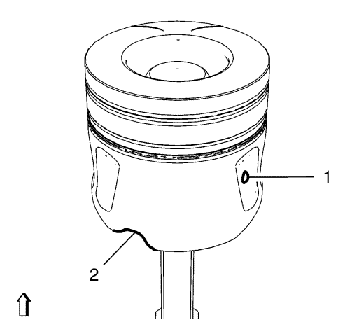

Nota: El punto (1) de la falda del pistón debe apuntar hacia el lado de la distribución para garantizar que la muesca (2) para el difusor de aceite esté en la posición correcta.
- Desplace las juntas de segmento de pistón NUEVAS hasta que hayan 120° entre ellas.
- Lubrique todos los orificios de cilindro y pistones, y el compresor EN-50425, con aceite de motor.
- Ponga el cigüeñal al P.M.S. de encendido del cilindro 2.

- Utilice el compresor EN-50425 (1) tal y como se indica en el gráfico anterior.
Nota: Si se utilizan pistones, bielas y sombreretes de cojinete de biela antiguos, móntelos en su posición original.
- Monte los 2 pistones NUEVOS con la biela NUEVA (1) y los casquillos de cojinete superiores de biela NUEVOS (2) en el cilindro 1 y 4.

- Monte los 2 sombreretes de cojinete de biela (2) con los casquillos de cojinete inferiores de biela (1) en el cilindro 1 y 4
Nota: No apriete los tornillos de retención del sombrerete del cojinete (3).
- Monte 4 tornillos de casquillo del cojinete de biela NUEVOS (3).
- Apriete los 4 tornillos de casquillo del cojinete de biela (3) en 2 pasadas.
| 8.1. | En la primera pasada, apriételos a 30 N·m (22 lib. pie). |
| 8.2. | En la segunda pasada, apriételos 70° más con el goniómetro EN-470-B. |
- Gire el cigüeñal 180° y colóquelo de forma que quede en el P.M.S. de encendido del cilindro 1.
Nota: Si se utilizan pistones, bielas y sombreretes de cojinete de biela antiguos, móntelos en su posición original.
- Monte 2 pistones NUEVOS con una biela NUEVA (1) y casquillos de cojinete superiores de biela NUEVOS (2) en el cilindro 2 y 3.
- Monte 2 sombreretes de cojinete de biela NUEVOS (2) con casquillos de cojinete inferiores de biela NUEVOS (1) en el cilindro 2 y 3.
Nota: No apriete los tornillos de retención del sombrerete del cojinete (3).
- Monte 4 tornillos de casquillo del cojinete de biela NUEVOS (3).
- Apriete los 4 tornillos de casquillo del cojinete de biela (3) en 2 pasadas.
| 13.1. | En la primera pasada, apriételos a 30 N·m (22 lib. pie). |
| 13.2. | En la segunda pasada, apriételos 70° más con el goniómetro EN-470-B. |
- Monte el dámper del cigüeñal. Consultar Montaje del balancín del cigüeñal .
- Monte el árbol de levas de admisión. Consultar Sustitución del árbol de levas de admisión .